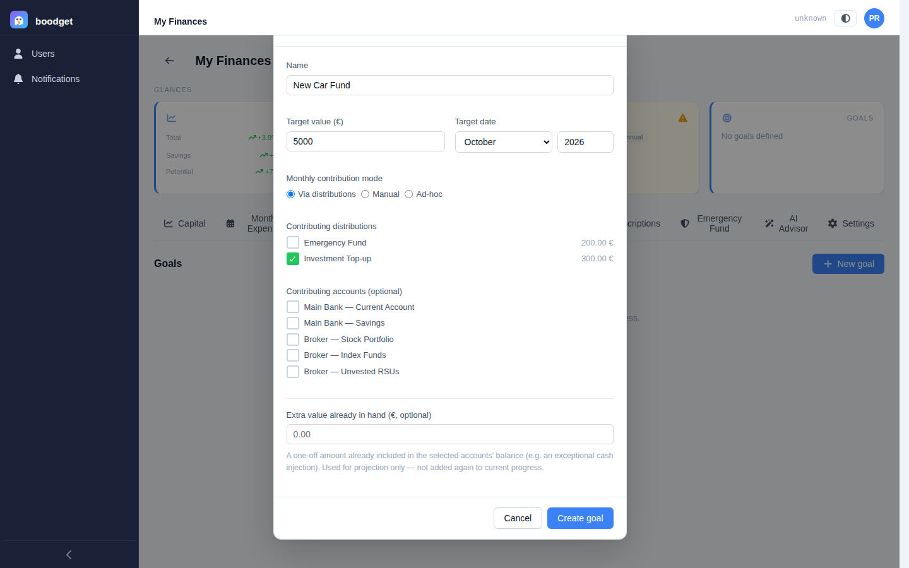
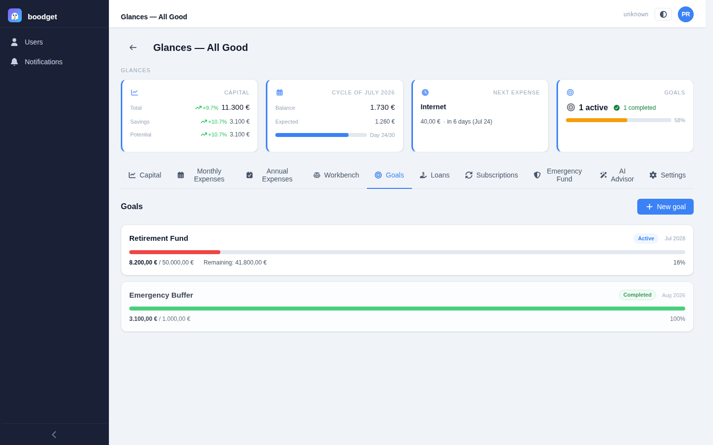
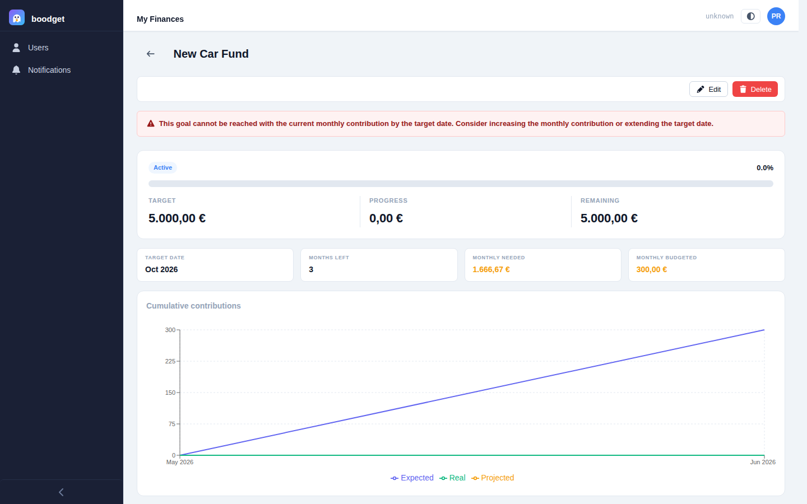
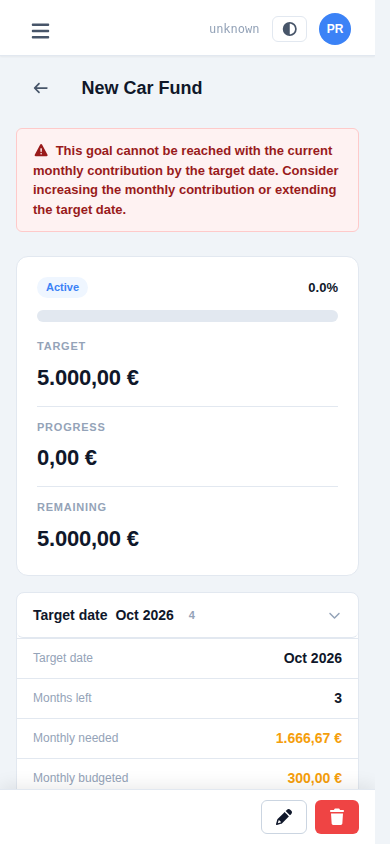
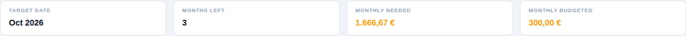
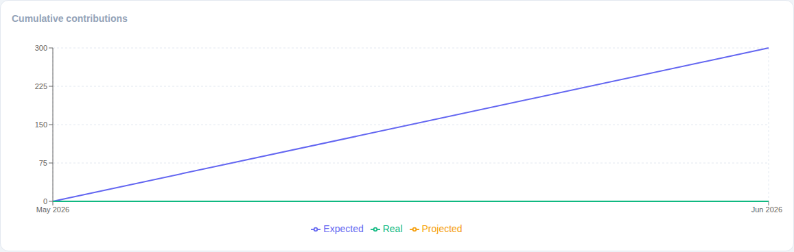
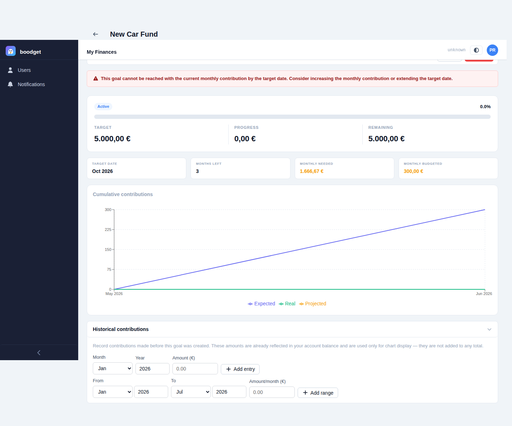

Setting and tracking Goals
A goal is a target amount by a target date, with boodget doing the arithmetic — how much you need to save each month, whether you're on pace, and when you'll actually get there. This page walks through creating one and reading its progress, step by step.
Give the goal a name, a target value, and a target date. Then pick one of three monthly contribution modes:
- Via distributions — select one or more distributions from your Monthly Expenses template; their combined value becomes the expected monthly contribution, and boodget automatically tracks the real contribution from whichever of those distributions get marked done each cycle.
- Manual — you type a fixed expected monthly amount, and record the real contribution yourself per cycle from the goal's detail page.
- Ad-hoc — no monthly figure at all; progress is read purely from the linked accounts' balance, with no chart or feasibility check.
Optionally select contributing accounts — their combined value (from your latest Capital snapshot) is the goal's current progress — and an extra value already in hand (money already sitting in those accounts from a one-off windfall), which only affects the projection, never the progress itself.

The Goals tab lists every goal for the dossier as a card: name, a state badge (Active, Completed, or Failed — computed automatically, never set by hand), the target date, a progress bar, and the current figure against the target. A goal that can't mathematically be reached with its current contribution gets an extra Infeasible badge and a warning line, so an unreachable plan never hides quietly in the list.

Opening a goal shows a progress bar against three headline figures — Target, Progress, and Remaining — with the same state badge and percentage as the list. If the goal is infeasible — its current contribution simply won't get there by the target date — a prominent banner above the hero says so plainly, rather than leaving you to infer it from a slow-moving bar.


Below the hero, a strip of figures fills in the rest of the picture: the target date itself, an estimated done date whenever you're on pace to finish early, months left, the monthly amount still needed, and — for Via-distributions and Manual goals — the monthly amount actually budgeted toward it, so you can see at a glance whether your plan covers what's required.

For Via-distributions and Manual goals, a chart plots Expected cumulative contributions (what your plan projected) against Real cumulative contributions (what actually happened each cycle), plus a dashed Projected line extending from today to the target date at your current pace. When that pace would get you there early, a dashed "Estimated" marker on the chart shows exactly which month. This chart isn't shown for Ad-hoc goals — without a monthly contribution figure, there's nothing to project.

Started tracking a goal after you'd already been saving toward it? The Historical contributions section lets you back-fill monthly amounts for the months before any cycle existed (or before the goal was created) — either one month at a time or as a date range. These are for the chart only: since the money is already reflected in your account balance, they're never added a second time to your actual progress.
